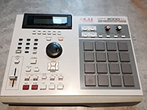

Equipo
| # | Equipo | Lanzamiento |
|---|---|---|
| 1 | AKAI MPC 2000XL | 2000 |
| 2 | ROLAND SP-404 | 2005 |
| 3 | SP EMU-1200 | 1987 |
AKAI MPC 2000XL
Mar 5, 2022
Sampleadora lanzada por la empresa AKAI, fue y sigue siendo muy reconocida por todos los beatmakers. Fue la que utilizó el famoso beatmaker JDilla, actualemente su MPC está expuesta el el museo de Detroit, como si de la guitarra de Hendrix se tratase.
ROLAND SP-404
Mar 3, 2022
De las sampleadoras más modernas y más accesibles. Muy usada por sus buenos racks de efectos y su muy buena simulación del sonido del vinilo. Esta sampleadora te permite hacer live-shows incluso. La pantalla tampoco te da mucha información sobre lo que estás haciendo, de manera que tienes que guiarte mediante el sonido que estás creando únicamente, de esta forma, las instrumentales salen mucho más únicas y orgánicas.
SP EMU-1200
Mar 1, 2022
La abuela de todas las sampleadoras, con esta sampleadora se empezaron a formar grupos como Wu Tang Clan. Tiene un sonido muy característico, y lo mejor es que es completamente analógica. Hoy día se han llegado a vender de segunda mano por 1600€.
Nedd Chairi Muñoz 2022 ©